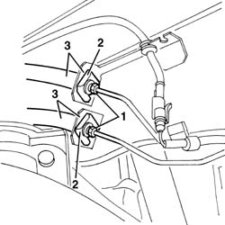
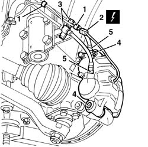
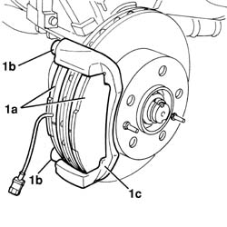

3310A30 FRONT BRAKE CALIPER ONE R R
- Path
- Procedures > 33 BRAKING SYSTEM > 3310 DISC BRAKES > 3310A FRONT DISC BRAKES > 3310A30 FRONT BRAKE CALIPER ONE R R
- Kind
- repair procedure (removal / refitting; the operation number is the code)
- Applies to
- all engines; all production periods
- Interactive page
- https://sloeber94.github.io/elrnDB-fDct/en/#/244001079
Applies to: all engines; all production periods
 Removing
Removing
 Refitting
Refitting- Remove the front wheel.
1. Undo the brake pipe connectors.
2. Release the flexible brake pipe retaining springs.
3. Release the flexible pipes from the support housings.

Applies to: all engines; all production periods
1. Cut the bands (1) securing the electrical wiring.
2. Disconnect the electrical connection for the brake pad wear sensor.
 | Description | Connector |
|---|---|---|
2 | Left brake pad wear sensor (switch) | K020 |
3. Disconnect the bands for the pipes from the support.
4. Undo the bolts fixing the brake caliper.
5. If necessary, undo the connectors and keep the flexible brake pipes.

Applies to: all engines; all production periods
1. If necessary, remove the brake pads (1a), then undo the bolts (1b) and remove the brake back plate (1c).

Applies to: all engines; all production periods
Refitting
Removing- If it has been removed, position the brake back plate and tighten the new bolts.
 | Value - daNm | Fastening | Component | Ø |
|---|---|---|---|---|
. | 19 - 28 daNm | Bolt | FRONT BRAKE CALIPER BRACKET | M16x1.5 |
- If they have been removed, tighten the flexible pipes to the brake caliper.
| Value - daNm | Fastening | Component | Ø |
|---|---|---|---|---|
. | 1.2 -2.2 daNm | Nut | BRAKING SYSTEM PIPE CONNECTORS | M10x1 |
- Place the brake caliper in position.
- Tighten the new bolts fixing the brake caliper.
- Connect the electrical connection for the brake pad wear sensor.
| Description | Connector |
|---|---|---|
. | Left brake pad wear sensor (switch) | K020 |
- Fit the flexible pipes in the support housings.
- Fit the flexible brake pipe retaining springs.
- Tighten the brake pipe connectors.
| Value - daNm | Fastening | Component | Ø |
|---|---|---|---|---|
. | 1.2 -2.2 daNm | Nut | BRAKING SYSTEM PIPE CONNECTORS | M10x1 |
- Position the electrical wiring and secure it using the bands.
Op. 0010T65 HYDRAULIC BRAKE SYSTEM BLEED AIR
- Refit the wheel.
- Check that the brakes are working.